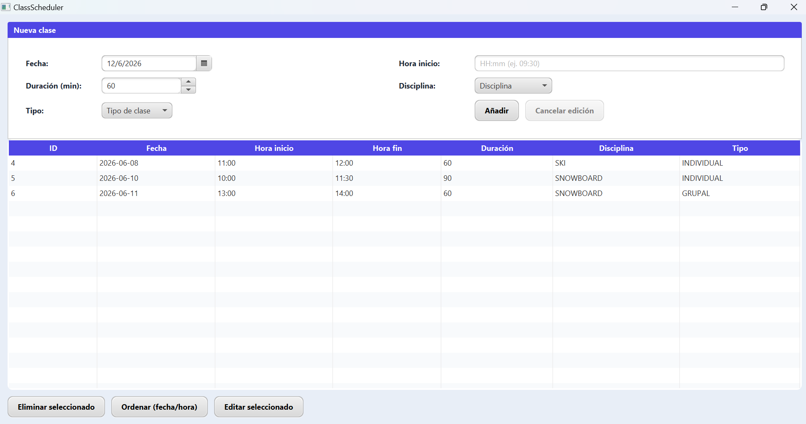

ClassScheduler
Aplicación desarrollada en Java para la gestión de horarios y clases.

Características
- Gestión de clases y horarios.
- Detección de solapamientos.
- Validación de datos.
- Interfaz gráfica desarrollada en Java Swing.
- Pruebas unitarias con JUnit.
Tecnologías utilizadas
Java
Maven
JUnit
Git